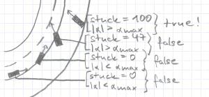
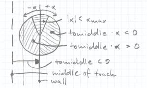

2.6 Improving Getting UnstuckCurrent Version First I will show you what the problem is with the current isStuck() function. Let's have a look at the sketch on the left. Assume the car comes from bottom left and wants to drive a left turn. It is too fast and starts oversteering, so the angle between the track tangent and the car becomes bigger and bigger. At a certain point the angle is big enough to start incrementing "stuck". When the car hits the wall with its back "stuck" is 100 and we try to get unstuck. So we are with the back at the wall and try to back up. So we are stuck again... Look careful at the sketch, it shows us also the solution for the problem. The front of the car looks "inside" toward the track middle. But like you can see, there is never such a situation where we need to get unstuck. You simply can drive forward to come back on the track. Look Inside Criteria If you think about our current code, you can perhaps remember that we already compute the variable "angle", which is the track tangent angle minus the car angle. So "angle" is positive clockwise (I called it alpha on the sketch). You should also remember car->_trkPos.toMiddle, which is positive on the left trackside and negative on the right side. Now you can conclude if "angle" times "tomiddle" is greater than zero we are looking toward the middle. This criteria holds always. You can paint the areas for the different parts of our expressions into the circle to understand it better. So if "fabs(angle) < MAX_UNSTUCK_ANGLE" is true we try to drive forward, else we check if we look outside and the "stuck" is already big enough. If that all is fullfilled, we return true to get unstuck. If not we just increment "stuck". |
Additional ConditionsAs you can see, MAX_UNSTUCK_ANGLE is 30 degrees. This is quite much, and can still cause problems if we try to drive forward along the wall. So we will reduce that angle. We will also add the condition, that the speed has to be below a certain threshold, before we try to get unstuck. An additional problem can occur if we try to get unstuck on the middle of the track. The following implementation will solve most of this problems. It will not solve the case, where the wall itself is not parallel to the track. The ImplementationSo finally here is the new isStuck(). Change it in driver.cpp. You can also further improve that.
/* Check if I'm stuck */
bool Driver::isStuck(tCarElt* car)
{
if (fabs(angle) > MAX_UNSTUCK_ANGLE &&
car->_speed_x < MAX_UNSTUCK_SPEED &&
fabs(car->_trkPos.toMiddle) > MIN_UNSTUCK_DIST) {
if (stuck > MAX_UNSTUCK_COUNT && car->_trkPos.toMiddle*angle < 0.0) {
return true;
} else {
stuck++;
return false;
}
} else {
stuck = 0;
return false;
}
}
Change also in driver.cpp this part of the drive function to apply more throttle to back up.
if (isStuck(car)) {
car->ctrl.steer = -angle / car->_steerLock;
car->ctrl.gear = -1; // reverse gear
car->ctrl.accelCmd = 0.5; // 50% accelerator pedal
car->ctrl.brakeCmd = 0.0; // no brakes
} else {
Put the constants at the start of driver.cpp. Reduce also MAX_UNSTUCK_ANGLE.
const float Driver::MAX_UNSTUCK_SPEED = 5.0; /* [m/s] */ const float Driver::MIN_UNSTUCK_DIST = 3.0; /* [m] */ You need also to define the new constants in driver.h.
static const float MAX_UNSTUCK_SPEED; static const float MIN_UNSTUCK_DIST; DownloadsIn case you got lost, you can download my robot for TORCS 1.2.0 or later. FeedbackLet me know if you read this chapter and your thoughts about it. Please send me also spelling, grammar, math and code corrections. Thank you for the feedback. Summary
|
|
Back |
Up |